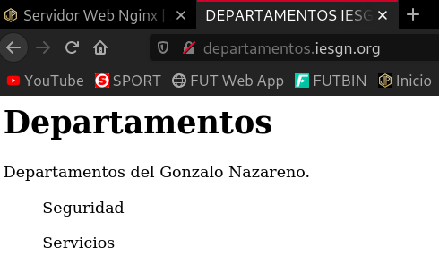
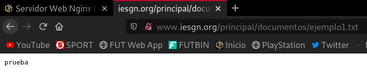
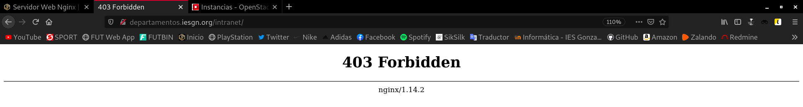

Servidor Web Nginx
1. Crea una máquina del cloud con una red pública. Añade la clave pública del profesor a la máquina. Instala el servidor web nginx en la máquina. Modifica la página index.html que viene por defecto y accede a ella desde un navegador.
He creado esta instancia con una imagen del cloud llamada Debian Buster 10.6 y un sabor llamado m1.mini.
Voy a añadir la clave pública de José Domingo que se encuentra en la Wiki.
Para ello la descargo previamente:
debian@deb10-servidornginx:~$ wget https://dit.gonzalonazareno.org/redmine/attachments/download/1996/id_rsa.pub --2020-11-03 17:49:14-- https://dit.gonzalonazareno.org/redmine/attachments/download/1996/id_rsa.pub Resolving dit.gonzalonazareno.org (dit.gonzalonazareno.org)... 192.168.203.2 Connecting to dit.gonzalonazareno.org (dit.gonzalonazareno.org)|192.168.203.2|:443... connected. HTTP request sent, awaiting response... 302 Found Location: https://dit.gonzalonazareno.org/redmine/login?back_url=https%3A%2F%2Fdit.gonzalonazareno.org%2Fredmine%2Fattachments%2Fdownload%2F1996%2Fid_rsa.pub [following] --2020-11-03 17:49:14-- https://dit.gonzalonazareno.org/redmine/login?back_url=https%3A%2F%2Fdit.gonzalonazareno.org%2Fredmine%2Fattachments%2Fdownload%2F1996%2Fid_rsa.pub Reusing existing connection to dit.gonzalonazareno.org:443. HTTP request sent, awaiting response... 200 OK Length: unspecified [text/html] Saving to: ‘id_rsa.pub’ id_rsa.pub [ <=> ] 5.08K --.-KB/s in 0.001s 2020-11-03 17:49:14 (3.56 MB/s) - ‘id_rsa.pub’ saved [5199] debian@deb10-servidornginx:~$ ls id_rsa.pub
Ahora la importo en el fichero authorized_keys de la instancia.
echo `cat ./id_rsa.pub` >> .ssh/authorized_keys
- Entrega la ip flotante de la máquina para que el profesor pueda acceder a ella.
La IP de la instancia es la 172.22.200.116
- Entrega una captura de pantalla accediendo a ella.
javier@debian:~$ ssh debian@172.22.200.116 Linux deb10-servidornginx 4.19.0-11-cloud-amd64 #1 SMP Debian 4.19.146-1 (2020-09-17) x86_64 The programs included with the Debian GNU/Linux system are free software; the exact distribution terms for each program are described in the individual files in /usr/share/doc/*/copyright. Debian GNU/Linux comes with ABSOLUTELY NO WARRANTY, to the extent permitted by applicable law. Last login: Tue Nov 3 17:54:49 2020 from 172.23.0.46 debian@deb10-servidornginx:~$
Hemos accedido a la instancia.
Virtual Hosting
Queremos que nuestro servidor web ofrezca dos sitios web, teniendo en cuenta lo siguiente:
-
Cada sitio web tendrá nombres distintos.
-
Cada sitio web compartirán la misma dirección IP y el mismo puerto (80).
Los dos sitios web tendrán las siguientes características:
-
El nombre de dominio del primero será
www.iesgn.org, su directorio base será/srv/www/iesgny contendrá una página llamadaindex.html, donde sólo se verá una bienvenida a la página del Instituto Gonzalo Nazareno. -
En el segundo sitio vamos a crear una página donde se pondrán noticias por parte de los departamento, el nombre de este sitio será
departamentos.iesgn.org, y su directorio base será/srv/www/departamentos. En este sitio sólo tendremos una página inicialindex.html, dando la bienvenida a la página de los departamentos del instituto.
2. Configura la resolución estática en los clientes y muestra el acceso a cada una de las páginas.
Antes de instalar el servidor web, en nuestro administrador de instancias, en mi caso, estoy utilizando una instancia del servicio de cloud de mi instituto, debemos abrir el puerto 80 (HTTP), ya que sino no nos va a dejar acceder a las páginas que configuremos.
Para instalar el servidor Nginx, voy a realizar una actualización de los repositorios, es decir, un apt update, pero si intentamos realizarlo, nos da un error que sinceramente desconozco el por qué, pero que he solventado comentando las líneas src en el fichero /etc/apt/sources.list.
apt update && apt install nginx -y
Antes de empezar con el proceso de configuración, apunto que voy a obviar cosas y no voy a dar tantos detalles ya que el proceso es muy parecido al del servidor Apache y en esos posts ya he dado los detalles suficientes. Si quieres ver los posts de Apache.
Una vez tenemos instalado Nginx, vamos a configurarlo. En primer lugar, voy a crear la configuración de las páginas que tenemos que servir, para ello creo los ficheros iesgn.conf y departamentos.conf:
root@deb10-servidornginx:~# cd /etc/nginx/sites-available/ root@deb10-servidornginx:/etc/nginx/sites-available# ls default root@deb10-servidornginx:/etc/nginx/sites-available# cp default iesgn.conf root@deb10-servidornginx:/etc/nginx/sites-available# nano iesgn.conf root@deb10-servidornginx:/etc/nginx/sites-available# cp iesgn.conf departamentos.conf root@deb10-servidornginx:/etc/nginx/sites-available# nano departamentos.conf
Así quedaría el fichero iesgn.conf:
server {
listen 80;
root /srv/www/iesgn;
index index.html index.htm index.nginx-debian.html;
server_name www.iesgn.org;
location / {
try_files $uri $uri/ =404;
}
}
Y así el departamentos.conf:
server {
listen 80;
root /srv/www/departamentos;
index index.html index.htm index.nginx-debian.html;
server_name departamentos.iesgn.org;
location / {
try_files $uri $uri/ =404;
}
}
Creamos los enlaces simbólicos a la ruta /etc/nginx/sites-enabled/ para habilitar el servicio de ambas páginas:
ln -s /etc/nginx/sites-available/iesgn.conf /etc/nginx/sites-enabled/ ln -s /etc/nginx/sites-available/departamentos.conf /etc/nginx/sites-enabled/
En segundo lugar, vamos a crear la estructura de directorios de las páginas, y vamos a crear los respectivos index.html:
root@deb10-servidornginx:/srv# mkdir www root@deb10-servidornginx:/srv# cd www/ root@deb10-servidornginx:/srv/www# mkdir iesgn departamentos root@deb10-servidornginx:/srv/www# ls departamentos iesgn root@deb10-servidornginx:/srv/www# touch ./iesgn/index.html ./departamentos/index.html root@deb10-servidornginx:/srv/www# ls -R .: departamentos iesgn ./departamentos: index.html ./iesgn: index.html
Le cambiamos el propietario y grupo al directorio /srv/www y todos sus hijos a www-data que es el usuario de Nginx:
chown -R www-data:www-data /srv/www
En este punto, solo nos faltaría reiniciar el servicio:
systemctl restart nginx
Si queremos visualizar las páginas en nuestra máquina anfitriona, añadimos estas líneas al fichero /etc/hosts:
172.22.200.116 www.iesgn.org 172.22.200.116 departamentos.iesgn.org
Página www.iesgn.org:
Página departamentos.iesgn.org:

Mapeo de URL
Cambia la configuración del sitio web www.iesgn.org para que se comporte de la siguiente forma:
3. Cuando se entre a la dirección www.iesgn.org se redireccionará automáticamente a www.iesgn.org/principal, donde se mostrará el mensaje de bienvenida. En el directorio principal no se permite ver la lista de los ficheros, no se permite que se siga los enlaces simbólicos y no se permite negociación de contenido. Muestra al profesor el funcionamiento.
Creamos el directorio principal:
root@deb10-servidornginx:/srv/www/iesgn# mkdir principal
Creamos la redirección, en este caso permanente, con la siguiente línea en el fichero de configuración /etc/nginx/sites-available/iesgn.conf:
rewrite ^/$ /principal permanent;
Para que no se permita ver la lista de ficheros, ni se sigan los enlaces simbólicos, como nos pide el ejercicio, introducimos el siguiente bloque location en /etc/nginx/sites-available/iesgn.conf:
location /principal {
autoindex off;
disable_symlinks on;
}
Antes de crear el index.html, vamos a comprobar que estas opciones están funcionando correctamente.
Para comprobar que no se muestra el listado de ficheros, vamos a crear un archivo .txt y vamos a crear un enlace simbólico sobre este archivo, así también comprobaremos que no se siguen los enlaces simbólicos.
Creamos el fichero de prueba y el enlace simbólico:
touch /home/debian/ejemplo1.txt ln -s /home/debian/ejemplo1.txt /srv/www/iesgn/principal/
Vemos que hemos creado el enlace simbólico en /srv/www/iesgn/principal:
root@deb10-servidornginx:/srv/www# ls -R .: departamentos iesgn ./departamentos: index.html ./iesgn: index.html principal ./iesgn/principal: ejemplo1.txt
Tendremos que cambiar el propietario de este enlace simbólico. Yo recurro de nuevo al comando utilizado anteriormente ya que lo aplica a los subdirectorios y archivos hijos:
chown -R www-data:www-data /srv/www
Reiniciamos el servicio:
systemctl restart nginx
Vamos a acceder a la página www.iesgn.org:
Vemos como además de redirigirnos automáticamente a www.iesgn.org/principal, no nos muestra el listado de ficheros. Si probamos a acceder a www.iesgn.org/principal/ejemplo1.txt, para ver si nos permite seguir el enlace simbólico:
Vemos que tampoco nos deja, por tanto tendríamos la página bien configurada. Ahora vamos a añadir un index.html:
root@deb10-servidornginx:/srv/www/iesgn# cp index.html ./principal/ root@deb10-servidornginx:/srv/www/iesgn# chown -R www-data:www-data /srv/www
Si ahora accedemos a la ruta www.iesgn.org nos redirigirá automáticamente a www.iesgn.org/principal y nos mostrará está página:
4. Si accedes a la página www.iesgn.org/principal/documentos se visualizarán los documentos que hay en /srv/doc. Por lo tanto se permitirá el listado de fichero y el seguimiento de enlaces simbólicos siempre que sean a ficheros o directorios cuyo dueño sea el usuario. Muestra al profesor el funcionamiento.
Creamos el directorio doc y creamos algunos documentos, no copio el index.html para que así nos muestre el listado de ficheros. Establecemos de nuevo como propietario www-data:
root@deb10-servidornginx:/srv# mkdir doc root@deb10-servidornginx:/srv# cd doc root@deb10-servidornginx:/srv/doc# touch ejemplo1.txt ejemplo2.txt ejemplo3.txt root@deb10-servidornginx:/srv/doc# ls ejemplo1.txt ejemplo2.txt ejemplo3.txt root@deb10-servidornginx:/srv/doc# cd .. root@deb10-servidornginx:/srv# chown -R www-data:www-data /srv/doc/
Introducimos la siguiente línea en el fichero de configuración /etc/nginx/sites-available/iesgn.conf para configurar el alias y habilitar el listado de ficheros y el seguimiento de los enlaces simbólicos siempre que el dueño del enlace y del archivo sea el mismo:
location /principal/documentos {
alias /srv/doc;
autoindex on;
disable_symlinks if_not_owner;
}
Accedemos a www.iesgn.org/principal/documentos:
Vemos que podemos ver el contenido de los ficheros:

5. En todo el host virtual se debe redefinir los mensajes de error de objeto no encontrado y no permitido. Para el ello se crearan dos ficheros html dentro del directorio error. Entrega las modificaciones necesarias en la configuración y una comprobación del buen funcionamiento.
Creamos el directorio error dentro de /srv/www/iesgn, y creamos dos archivos llamados, error404.html y error403.html:
root@deb10-servidornginx:/srv/www/iesgn# mkdir error root@deb10-servidornginx:/srv/www/iesgn# cd error/ root@deb10-servidornginx:/srv/www/iesgn/error# cp ../index.html ./ root@deb10-servidornginx:/srv/www/iesgn/error# mv index.html error404.html root@deb10-servidornginx:/srv/www/iesgn/error# cp error404.html error403.html root@deb10-servidornginx:/srv/www/iesgn/error# ls error403.html error404.html root@deb10-servidornginx:/srv/www/iesgn/error# chown -R www-data:www-data /srv/
Introducimos las siguientes líneas en el fichero de configuración /etc/nginx/sites-available/iesgn.conf para configurar las página de errores, tanto para los errores 404, como para los 403:
error_page 404 /srv/www/error/error404.html; error_page 403 /srv/www/error/error403.html;
Reiniciamos el servicio:
systemctl restart nginx
Si ahora accedemos a www.iesgn.org/principal/noexiste:
Si accedemos a www.iesgn.org/principal/ejemplo1.txt (recordemos que antes configuramos que en esta página no se pudieran seguir los enlaces simbólicos):

Autentificación, Autorización, y Control de Acceso
6. Añade al escenario otra máquina conectada por una red interna al servidor. A la URL departamentos.iesgn.org/intranet sólo se debe tener acceso desde el cliente de la red local, y no se pueda acceder desde la anfitriona por la red pública. A la URL departamentos.iesgn.org/internet, sin embargo, sólo se debe tener acceso desde la anfitriona por la red pública, y no desde la red local.
Vamos a crear una nueva mv, en mi caso voy a crear una nueva instancia en Openstack, pero a esta instancia no le voy a asignar ninguna IP pública, de manera que solo estará conectada a la red interna.
Aquí vemos el resultado:
Ahora vamos a crear las páginas departamentos.iesgn.org/intranet y departamentos.iesgn.org/internet, para ello creamos los directorios /srv/www/departamentos/intranet y /srv/www/departamentos/internet, y sus respectivos index.html:
root@deb10-servidornginx:/srv/www/departamentos# mkdir intranet internet root@deb10-servidornginx:/srv/www/departamentos# ls index.html internet intranet root@deb10-servidornginx:/srv/www/departamentos# cp index.html ./intranet/ root@deb10-servidornginx:/srv/www/departamentos# cp index.html ./internet/ root@deb10-servidornginx:/srv/www/departamentos# chown -R www-data:www-data /srv/
En el fichero de configuración /etc/nginx/sites-available/departamentos.conf introducimos las siguientes líneas:
location /intranet {
allow 10.0.0.0/24;
deny all;
}
location /internet {
allow 172.22.0.0/16;
allow 172.23.0.0/16;
deny all;
}
Reiniciamos el servicio:
systemctl restart nginx
-
Máquina anfitriona conectada a internet:
- Accedemos a
departamentos.iesgn.org/internet:
- Accedemos a
departamentos.iesgn.org/intranet:

- Accedemos a
Vemos como nos deja acceder a la web /internet pero no a la web /intranet.
- Máquina conectada a la red local:
¿Como accedemos a esta máquina?
Está claro que debemos acceder desde la máquina a la que sí podemos conectarnos desde la anfitriona, es decir, desde Deb10-ServidorNginx, pero si lo probamos:
debian@deb10-servidornginx:~$ ssh debian@10.0.0.9 The authenticity of host '10.0.0.9 (10.0.0.9)' can't be established. ECDSA key fingerprint is SHA256:ZBpyohTSOfc2xdR+hSTXvhq3LMRk6x8rlr0efamEQ3k. Are you sure you want to continue connecting (yes/no)? yes Warning: Permanently added '10.0.0.9' (ECDSA) to the list of known hosts. debian@10.0.0.9's password: debian@deb10-servidornginx:~$
Nos pide la contraseña, la cuál no hemos establecido nosotros porque ni siquiera nos hemos llegado a conectar a esta máquina. En este punto, creo que todos tenemos claro que debemos tratar de establecer una conexión mediante nuestra clave privada, ya que todas las instancias que creamos están configuradas y poseen nuestra clave pública. Ya hemos visto que no nos ha dejado establecer la conexión mediante las claves públicas-privadas ya que la máquina Deb10-ServidorNginx no posee las claves de la anfitriona. Aquí la cuestión, que para esto existe la opción -A, que si la utilizamos al establecer la conexión desde la máquina anfitriona a la Deb10-ServidorNginx, ésta última nos va a heredar las claves de la primera, de forma que ya sí podríamos establecer una conexión mediante el par de claves con la máquina Deb10-ServidorNginx2.
Nos conectamos a Deb10-ServidorNginx con este comando:
javier@debian:~$ ssh -A debian@172.22.200.116 Linux deb10-servidornginx 4.19.0-11-cloud-amd64 #1 SMP Debian 4.19.146-1 (2020-09-17) x86_64 The programs included with the Debian GNU/Linux system are free software; the exact distribution terms for each program are described in the individual files in /usr/share/doc/*/copyright. Debian GNU/Linux comes with ABSOLUTELY NO WARRANTY, to the extent permitted by applicable law. Last login: Sun Nov 8 10:53:28 2020 from 172.23.0.46 debian@deb10-servidornginx:~$
Y ahora nos conectamos a Deb10-ServidorNginx2:
debian@deb10-servidornginx:~$ ssh debian@10.0.0.9 Linux deb10-servidornginx2 4.19.0-11-cloud-amd64 #1 SMP Debian 4.19.146-1 (2020-09-17) x86_64 The programs included with the Debian GNU/Linux system are free software; the exact distribution terms for each program are described in the individual files in /usr/share/doc/*/copyright. Debian GNU/Linux comes with ABSOLUTELY NO WARRANTY, to the extent permitted by applicable law. debian@deb10-servidornginx2:~$
Ya habríamos resuelto el principal problema.
Para visualizar la web en esta máquina debemos añadir al fichero /etc/hosts la línea:
172.22.200.116 departamentos.iesgn.org
Instalamos la herramiento lynx para poder tener una especie de navegador en la terminal:
apt update && apt install lynx -y
Accedemos a las URL:
lynx departamentos.iesgn.org/internet lynx departamentos.iesgn.org/intranet
-
Máquina conectada a la red local:
- Accedemos a
departamentos.iesgn.org/internet:
- Accedemos a
departamentos.iesgn.org/intranet:
- Accedemos a
Vemos como nos deja acceder a la web /intranet pero no a la web /internet.
7. Autentificación básica. Limita el acceso a la URL departamentos.iesgn.org/secreto. Comprueba las cabeceras de los mensajes HTTP que se intercambian entre el servidor y el cliente.
Vamos a crear la página departamentos.iesgn.org/secreto. Creamos el directorio /srv/www/departamentos/secreto y su respectivo index.html:
root@deb10-servidornginx:/srv/www/departamentos# mkdir secreto root@deb10-servidornginx:/srv/www/departamentos# cp index.html ./secreto/ root@deb10-servidornginx:/srv/www/departamentos# cd secreto/ root@deb10-servidornginx:/srv/www/departamentos/secreto# nano index.html
Como queremos que a esta web solo puedan acceder determinados usuarios autorizados, vamos a establecer una autentificación básica. Para hacer esto, debemos generar un fichero .htpasswd que va a ser el que contenga los usuarios con sus contraseñas, que pueden acceder a este sitio web.
Para crear este fichero, necesitamos instalar el paquete apache2-utils, que es el que incluye la herramienta que necesitamos:
apt install apache2-utils -y
Generamos el fichero de contraseñas:
root@deb10-servidornginx:/srv/www/departamentos/secreto# htpasswd -c /srv/www/departamentos/secreto/.htpasswd javier New password: Re-type new password: Adding password for user javier
Si quisiéramos añadir un nuevo usuario, deberíamos introducir el mismo comando pero sin la opción -c, ya que sino, nos crearía un nuevo un archivo machacando el ya existente.
Por último, en el fichero de configuración /etc/nginx/sites-available/departamentos.conf, vamos a especificar la autentificación básica que hemos creado:
location /secreto {
auth_basic "Introduzca sus datos";
auth_basic_user_file /srv/www/departamentos/secreto/.htpasswd;
}
Reiniciamos el servicio:
systemctl restart nginx
Accedemos a departamentos.iesgn.org/secreto/:
Vemos como nos pide unas credenciales para confirmar que estamos autorizados a visualizar esta web. Si introducimos los datos correctos:
Al parecer todo es seguro y está bien, pero, ¿qué es lo último que deseamos cuando nos logueamos en una web? Exacto, que nuestras credenciales y nuestros datos no se conozcan y sean seguros, pues la autenticación básica no cuida esto, sino que envía nuestras contraseñas sin ningún tipo de cifrado y al descubierto, por lo que estamos totalmente expuestos.
He hecho una prueba capturando el tráfico, en la que podemos ver como cualquiera que esté escuchando el tráfico de la red, podría ver nuestros datos.
Si nos fijamos en la línea seleccionada, que hace referencia a la petición que hemos hecho con nuestras credenciales, podemos ver como nos muestra la contraseña.
8. Vamos a combinar el control de acceso (tarea 6) y la autentificación (tarea 7), y vamos a configurar el virtual host para que se comporte de la siguiente manera: el acceso a la URL departamentos.iesgn.org/secreto se hace forma directa desde la intranet, desde la red pública te pide la autentificación. Muestra el resultado al profesor.
Para combinar el control de acceso y que desde la intranet se acceda de manera automática a departamentos.iesgn.org/secreto, pero desde internet compruebe si somos un usuario autorizado, tenemos que incluir en el fichero /etc/nginx/sites-available/departamentos.conf esta directiva:
location /secreto {
satisfy any;
allow 10.0.0.0/24;
deny all;
auth_basic "Introduzca sus datos";
auth_basic_user_file /srv/www/departamentos/secreto/.htpasswd;
}
La opción satisfy any indica que debe cumplirse al menos un bloque para acceder a la web. De manera, que primero se comprobará si el cliente pertenece a la red 10.0.0.0/24, si es así, accederá automáticamente, y sino, le pedirá que se loguee, y si los datos introducidos son correctos, se accederá a la página, si los datos no son correctos, devolverá un error 403.
- Máquina anfitriona conectada a internet:
- Máquina conectada a la red local: